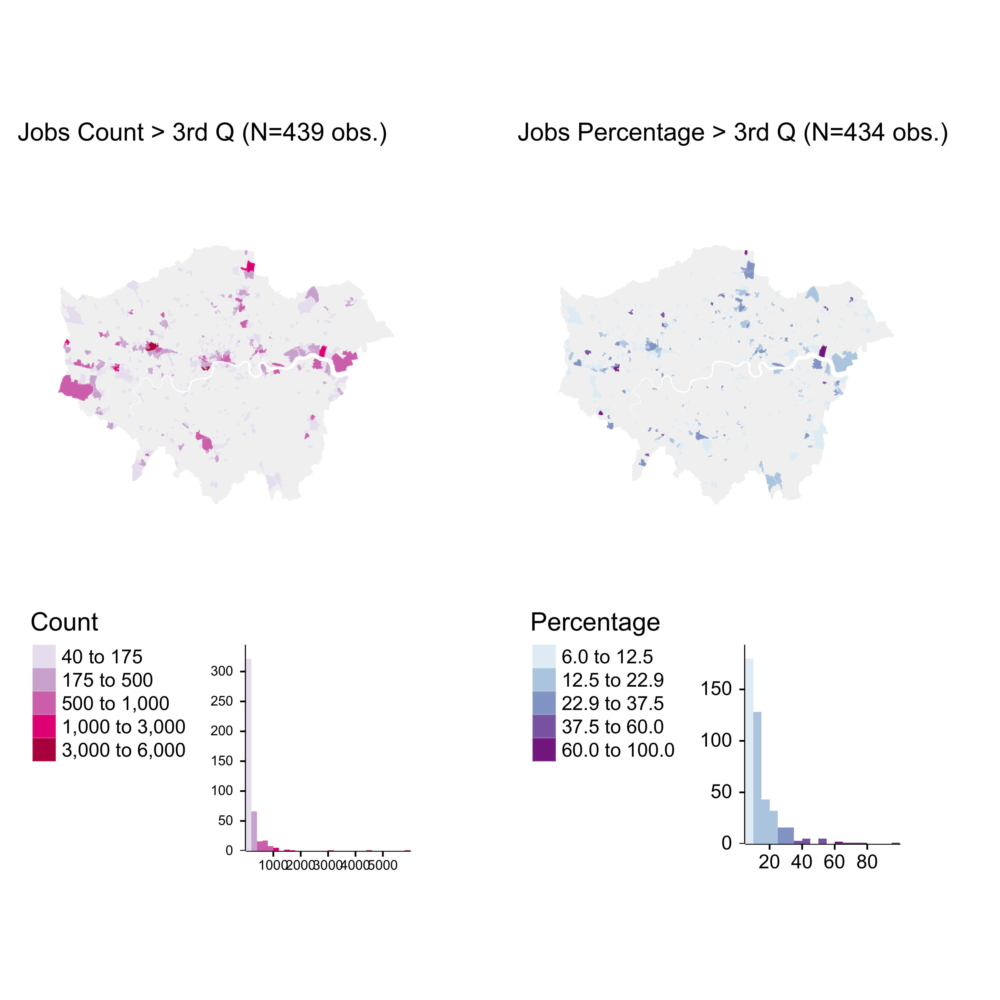
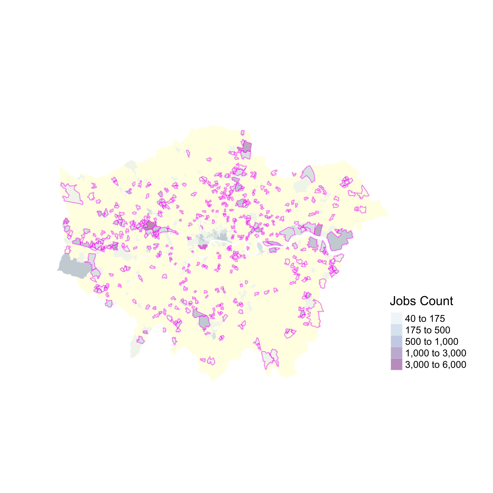
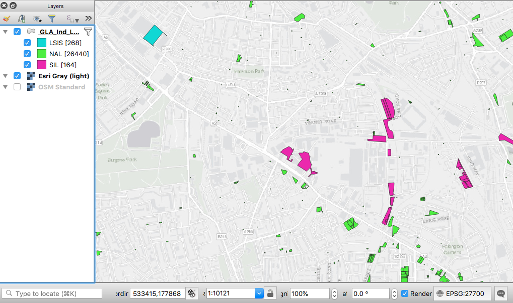

Manufacturing places in London
1 Problem
Identify locations outside the Industrial Land Designation areas with high concentration of manufacturing, other economic activities and residences.
2 Context
We have analysed 3 open data datasets refering to Manufacturing in London.
| Name | Source | Observation | General_Desc | Version |
|---|---|---|---|---|
| Directory of London Businesses - UK Standard Industrial Classification (SIC) | London Data Store (1) | “Data snapshot containing basic company data of live companies on the register. Each entry represents a financial accounts submission of either a whole company or part of one. Some businesses have more than one entry in the directory because they need to submit more than one set of accounts for different parts of their business.” “The London cut available to download here, was created using a postcode list… inaccuracies in postcodes may mean that no local authority is listed for a company.” | Point data, N = 1,130,474 obs. | May 2018 |
| Business Register and Employment Survey - BRES | NOMIS - Official Labour Market Statistics ONS (2) | “An employer survey of the number of jobs held by employees broken down by full/part-time and detailed industry (5 digit SIC2007)” | Estimated number of jobs per LSOA (N = 4,835 obs.) Includes Industry percentage (percentage of jobs in Manufacturing) (3) | 2017 (latest data) |
| Inter Departmental Business Register (IDBR) | NOMIS - Official Labour Market Statistics ONS | “An extract recording the number of local units that were live at a reference date in March. Estimates can be broken down by employment size band, detailed industry (5 digit SIC2007) and legal status.” - “A local unit is an individual site (for example a factory or shop) associated with an enterprise. It can also be referred to as a workplace.” | Number of workplaces per MSOA (N = 983 obs.) (4) | 2018 (latest data) |
URLs:
1 https://data.london.gov.uk
2 https://www.nomisweb.co.uk/
3 https://www.ons.gov.uk/employmentandlabourmarket/peopleinwork/employmentandemployeetypes/bulletins/businessregisterandemploymentsurveybresprovisionalresults/provisionalresults2017revisedresults2016#quality-and-methodology
4 https://www.ons.gov.uk/aboutus/whatwedo/paidservices/interdepartmentalbusinessregisteridbr https://www.ons.gov.uk/businessindustryandtrade/business/activitysizeandlocation/methodologies/ukbusinessactivitysizeandlocationqmi
3 Cartographic summary
London Businesses Directory
https://npalomin.github.io/pnum/fame_rev.html
Manufacturing Jobs percentage per LSOA
https://github.com/npalomin/pnum/blob/master/ss_lsoa_light.md
Local Units and Enterprises Count per LSOA
https://npalomin.github.io/pnum/IDBR.html
GLA-Designated Industrial Land
https://npalomin.github.io/pnum/GLA_indLand/GLA_indLand.html
4 Analysis of BRES
A detailed analysis was carried out for the BRES dataset due to four reasons:
The number of manufacturing jobs obtained from the BRES dataset is considered the best proxy to represent manufacturing intensity. This measure can be interpreted as a combination of number of manufacturing units and size.
The level of detail of the BRES dataset at the LSOA area is considered sufficient to allow the selection of case study areas for micro-morphology analysis.
The SIC dataset despite having a finer-grain resolution has shown innacuracies in the location of the data points (reference: Vyner street case study Cites of Making project).
Despite the fact that the IDBR considers a larger sample at the national level, it is aggregated at a lower resolution geographic area (MSOA). Also, because according to a data methodological note “it is possible to get multiple business registrations at a single address and this can distort data for smaller geographical areas” (https://www.ons.gov.uk/businessindustryandtrade/business/activitysizeandlocation/methodologies/ukbusinessactivitysizeandlocationqmi/pdf).
4.1 Metadata
Data source: NOMIS official labour market statistics (ONS) URL: https://www.nomisweb.co.uk/
Definition: “An employer survey of the number of jobs held by employees broken down by full/part-time and detailed industry (5 digit SIC2007). The survey records a job at the location of an employees workplace. Available from country down to lower level super output area and Scottish datazone.”
Ref URLs: https://onsdigital.github.io/dp-classification-tools/standard-industrial-classification/ONS_SIC_hierarchy_view.html
Read NOMIS data. Lower Layer Super Output Area (2011)
Industry Standard industrial classification of economic activities (SIC) 2007 section C: Manufacturing
nom <- read_csv("/Volumes/ritd-ag-project-rd00lq-jamfe87/GIS_Analysis/dataProcessed/nomis_4835.csv") # 4,835 obs.4.2 Data summary
Create variable ‘lsoa11_cd’ from variable ‘lsoa11_2011’ substract chr 1 to 4 (first 4 characters)
nom <- mutate(nom, lsoa11_cd = substr(lsoa_2011, 1, 9))Summary of ‘nom’ Count and Industry percentage
summary(nom)## lsoa_2011 Count Industry percentage
## Length:4835 Min. : 0.00 Min. : 0.000
## Class :character 1st Qu.: 0.00 1st Qu.: 0.000
## Mode :character Median : 0.00 Median : 0.000
## Mean : 22.12 Mean : 1.814
## 3rd Qu.: 10.00 3rd Qu.: 1.400
## Max. :6000.00 Max. :100.000
## lsoa11_cd
## Length:4835
## Class :character
## Mode :character
##
##
## ## [1] 34| Jobs count frequency per LSOA (N = 4,835) | |||||||
| Jobs | Frequency | Jobs | Frequency | Jobs | Frequency | Jobs | Frequency |
|---|---|---|---|---|---|---|---|
| 0 | 3052 | 50 | 72 | 350 | 9 | 1750 | 1 |
| 5 | 366 | 75 | 51 | 400 | 11 | 3000 | 1 |
| 10 | 539 | 100 | 53 | 450 | 2 | 4500 | 1 |
| 15 | 120 | 125 | 18 | 500 | 3 | 6000 | 1 |
| 20 | 151 | 150 | 34 | 600 | 11 | ||
| 25 | 60 | 175 | 8 | 700 | 6 | ||
| 30 | 75 | 200 | 14 | 800 | 4 | ||
| 35 | 33 | 225 | 6 | 900 | 4 | ||
| 40 | 57 | 250 | 21 | 1000 | 5 | ||
| 45 | 28 | 300 | 16 | 1500 | 2 | ||
Most LSOAs have 0 jobs in manufacturing. Among the rest the most frequent number is 10 jobs (in 539 LSOAs). High number of jobs ( > 1500) are an exception.
## [1] 107| Jobs Percentage frequency per LSOA (N = 4,835) | |||||||||
| Perc. | Frequency | Perc. | Frequency | Perc. | Frequency | Perc. | Frequency | Perc. | Frequency |
|---|---|---|---|---|---|---|---|---|---|
| 0 | 3105 | 2.2 | 27 | 5.7 | 12 | 12.5 | 16 | 26.7 | 7 |
| 0.1 | 17 | 2.3 | 7 | 5.8 | 5 | 12.9 | 2 | 27.8 | 1 |
| 0.2 | 51 | 2.4 | 1 | 6 | 14 | 13.3 | 12 | 28 | 1 |
| 0.3 | 47 | 2.5 | 82 | 6.2 | 9 | 13.9 | 2 | 28.6 | 1 |
| 0.4 | 42 | 2.7 | 5 | 6.4 | 2 | 14 | 1 | 30 | 6 |
| 0.5 | 38 | 2.8 | 5 | 6.7 | 81 | 14.3 | 3 | 33.3 | 9 |
| 0.6 | 45 | 2.9 | 45 | 7 | 3 | 15 | 12 | 34.3 | 1 |
| 0.7 | 41 | 3 | 25 | 7.1 | 4 | 16 | 2 | 35 | 1 |
| 0.8 | 48 | 3.1 | 3 | 7.5 | 16 | 16.7 | 18 | 36 | 1 |
| 0.9 | 13 | 3.2 | 2 | 8 | 26 | 17.5 | 1 | 37.5 | 1 |
| 1 | 60 | 3.3 | 96 | 8.3 | 16 | 17.8 | 1 | 40 | 3 |
| 1.1 | 31 | 3.5 | 3 | 8.6 | 4 | 18 | 2 | 41.7 | 2 |
| 1.2 | 72 | 3.6 | 13 | 8.8 | 3 | 18.8 | 7 | 50 | 4 |
| 1.3 | 11 | 3.8 | 13 | 8.9 | 1 | 20 | 22 | 53.3 | 1 |
| 1.4 | 42 | 3.9 | 4 | 9.4 | 1 | 20.8 | 1 | 60 | 2 |
| 1.5 | 12 | 4 | 56 | 10 | 69 | 21.4 | 1 | 66.7 | 1 |
| 1.6 | 2 | 4.2 | 3 | 10.7 | 2 | 22.2 | 2 | 70 | 1 |
| 1.7 | 86 | 4.3 | 10 | 11.1 | 3 | 22.9 | 1 | 75 | 1 |
| 1.8 | 3 | 4.4 | 12 | 11.2 | 4 | 23.3 | 1 | 100 | 1 |
| 1.9 | 12 | 4.5 | 3 | 11.4 | 2 | 23.7 | 1 | ||
| 2 | 71 | 5 | 102 | 11.7 | 3 | 24 | 3 | ||
| 2.1 | 11 | 5.6 | 7 | 12 | 9 | 25 | 6 | ||
Most LSOAs have 0% jobs in manufacturing. Among the rest the most frequent percentage is 5% (in 102 LSOAs). High percentage of jobs ( > 53%) are an exception.
4.3 Histograms
# drop 0 values
nom1 <- subset(nom, nom$Count > 0 & nom$`Industry percentage` > 0) # 1730Summary of values > 0
summary(nom1)## lsoa_2011 Count Industry percentage
## Length:1730 Min. : 5.00 Min. : 0.100
## Class :character 1st Qu.: 10.00 1st Qu.: 1.125
## Mode :character Median : 15.00 Median : 2.500
## Mean : 61.51 Mean : 5.070
## 3rd Qu.: 40.00 3rd Qu.: 6.000
## Max. :6000.00 Max. :100.000
## lsoa11_cd
## Length:1730
## Class :character
## Mode :character
##
##
## ## Warning: Removed 126 rows containing non-finite values (stat_bin).## Warning: Removed 2 rows containing missing values (geom_bar).## Warning: Removed 18 rows containing non-finite values (stat_bin).## Warning: Removed 2 rows containing missing values (geom_bar).4.4 Boxpolots
4.5 Maps
lsoa <- st_read("/Volumes/ritd-ag-project-rd00lq-jamfe87/GIS_Analysis/dataRaw/statistical-gis-boundaries-london/ESRI/LSOA_2011_London_gen_MHW.shp")## Reading layer `LSOA_2011_London_gen_MHW' from data source `/Volumes/ritd-ag-project-rd00lq-jamfe87/GIS_Analysis/dataRaw/statistical-gis-boundaries-london/ESRI/LSOA_2011_London_gen_MHW.shp' using driver `ESRI Shapefile'
## Simple feature collection with 4835 features and 15 fields
## geometry type: MULTIPOLYGON
## dimension: XY
## bbox: xmin: 503574.2 ymin: 155850.8 xmax: 561956.7 ymax: 200933.6
## epsg (SRID): NA
## proj4string: +proj=tmerc +lat_0=49 +lon_0=-2 +k=0.999601272 +x_0=400000 +y_0=-100000 +datum=OSGB36 +units=m +no_defsCreate gray London basemap
Join with NOMIS data ‘nom’
mpl <- append_data(lsoa, nom, key.shp = "LSOA11CD", key.data = "lsoa11_cd", ignore.duplicates = TRUE, ignore.na = TRUE)## Keys match perfectly.names(mpl)## [1] "LSOA11CD" "LSOA11NM" "MSOA11CD"
## [4] "MSOA11NM" "LAD11CD" "LAD11NM"
## [7] "RGN11CD" "RGN11NM" "USUALRES"
## [10] "HHOLDRES" "COMESTRES" "POPDEN"
## [13] "HHOLDS" "AVHHOLDSZ" "LSOAa"
## [16] "lsoa_2011" "Count" "Industry percentage"
## [19] "geometry"Maps of job Counts > 40 and Percentage > 6% (> 3rd Q)

A visual comparison shows that LSOAs with high number of jobs in some cases is coincident with LSOAs with high percentage of jobs. Both meaures might be indicators of ‘manufacturing intensity’.

Interactive Map
https://npalomin.github.io/pnum/msum.html
#msum.i <- msum
#tmap_mode("view")
#msum.i#tmap_save(msum.i, "msum.html")The selection of values with both conditions Count >= 40 & IndPer >= 6 shows 253 obs.
5 Industrial Land 2015
ild <- st_read("/Volumes/ritd-ag-project-rd00lq-jamfe87/GIS_Analysis/dataProcessed/GLA_Ind_Land_Baseline_2015/GLA_Ind_Land_bl_2015.shp")## Reading layer `GLA_Ind_Land_bl_2015' from data source `/Volumes/ritd-ag-project-rd00lq-jamfe87/GIS_Analysis/dataProcessed/GLA_Ind_Land_Baseline_2015/GLA_Ind_Land_bl_2015.shp' using driver `ESRI Shapefile'
## Simple feature collection with 104006 features and 15 fields
## geometry type: MULTIPOLYGON
## dimension: XYZ
## bbox: xmin: 503943.6 ymin: 157513.4 xmax: 561088.1 ymax: 200761.6
## epsg (SRID): NA
## proj4string: +proj=tmerc +lat_0=49 +lon_0=-2 +k=0.9996012717 +x_0=400000 +y_0=-100000 +datum=OSGB36 +units=m +no_defsSummary of ‘ild’ (n=104006 obs.)
summary(ild)## OBJECTID OBJECTID_1 LU_CODE_20 BOROUGH
## Min. : 1 Min. : 5875 Min. : 0.000 Ealing :10494
## 1st Qu.: 26002 1st Qu.: 39820 1st Qu.: 2.000 Hillingdon: 9114
## Median : 52004 Median : 72514 Median : 5.000 Hounslow : 8881
## Mean : 52004 Mean : 75011 Mean : 6.917 Brent : 8679
## 3rd Qu.: 78005 3rd Qu.:118445 3rd Qu.: 9.000 Enfield : 6575
## Max. :104006 Max. :146437 Max. :25.000 Sutton : 4541
## (Other) :55722
## URSID
## 2045 : 1211
## SIL58 : 1201
## SIL53.3: 1200
## SIL99.2: 999
## 2096 : 960
## (Other):71563
## NA's :26872
## Note LU_Code_21
## 1 : 1560 Min. : 1.0
## Docks data unchanged from 2010 data : 1200 1st Qu.: 2.0
## Council Update 2015 : 924 Median : 3.0
## No update info updated sperately from 2015 exerci*: 762 Mean : 6.1
## Source UK Map : 168 3rd Qu.: 8.0
## (Other) : 249 Max. :24.0
## NA's :99143
## TYPE_2015 GISUPDATE_ Area_Ha Shape_Leng
## LSIS:20264 N/A :94299 Min. : 0.00000 Min. : 0.00
## NAL :45716 new : 300 1st Qu.: 0.00182 1st Qu.: 19.46
## SIL :38026 WA : 69 Median : 0.00674 Median : 45.30
## WAWU: 90 Mean : 0.07296 Mean : 109.15
## WU : 9248 3rd Qu.: 0.03334 3rd Qu.: 114.88
## Max. :81.45079 Max. :20927.35
##
## Easting Northing Shape_Le_1 Shape_Area
## Min. : 0 Min. : 0 Min. : 0.00 Min. : 0.0
## 1st Qu.:517967 1st Qu.:174716 1st Qu.: 19.46 1st Qu.: 18.2
## Median :526235 Median :180326 Median : 45.30 Median : 67.4
## Mean :525519 Mean :179624 Mean : 109.15 Mean : 729.6
## 3rd Qu.:535057 3rd Qu.:185239 3rd Qu.: 114.88 3rd Qu.: 333.4
## Max. :561042 Max. :200758 Max. :20927.35 Max. :814507.9
##
## geometry
## MULTIPOLYGON Z:104006
## epsg:NA : 0
## +proj=tmer... : 0
##
##
##
## | Industrial Land Type | |
| TYPE_2015 | freq |
|---|---|
| LSIS | 20264 |
| NAL | 45716 |
| SIL | 38026 |
Map of GLA Designated Industrial Land
https://npalomin.github.io/pnum/GLA_indLand/GLA_indLand.html
Shape area summary by Type
# library(purrr)
# typeSUM <- ild %>% split(.$TYPE_2015) %>% map(summary)| Industrial Land Type | ||||
| TYPE_2015 | mean | median | min | max |
|---|---|---|---|---|
| LSIS | 570.92 | 86.47 | 0 | 165982.37 |
| NAL | 555.58 | 42.68 | 0 | 359925.45 |
| SIL | 1023.27 | 99.16 | 0 | 814507.91 |
Analyse area distributuon by type
| Industrial Land Type | |||||||
| (-Inf,5] | (5,30] | (30,100] | (100,500] | (500,5000] | (5000,20000] | (20000, Inf] | |
|---|---|---|---|---|---|---|---|
| LSIS | 1235 | 4981 | 4482 | 5615 | 3576 | 327 | 48 |
| NAL | 2755 | 16870 | 9381 | 9328 | 6559 | 674 | 149 |
| SIL | 2042 | 9432 | 7594 | 10001 | 7705 | 1005 | 247 |
| Total | 6032 | 31283 | 21457 | 24944 | 17840 | 2006 | 444 |
| Industrial Land Type Area Distribution (natural breaks) | |||||||
| (0,2762] | (2762,13001] | (13001,38525] | (38525,100191] | (100191,217698] | (217698,359925] | (359925,814508] | |
|---|---|---|---|---|---|---|---|
| LSIS | 19489 | 679 | 81 | 12 | 3 | 0 | 0 |
| NAL | 43959 | 1490 | 215 | 40 | 6 | 1 | 1 |
| SIL | 35663 | 1938 | 316 | 81 | 21 | 3 | 3 |
| Total | 99111 | 4107 | 612 | 133 | 30 | 4 | 4 |
Sample of “URSID” = ‘’ (N=26,876 obs.) by ‘TYPE_2015’ 
26,640 obs. (out of N=26,876 obs.) are ‘NAL’ ‘TYPE_2015’ (see AECOM map for meaning of NAL - might be Non-designated Sites, eventhough they are part of the ‘GLA-Desiganted Industrial Land’ dataset). The absence of ‘URSID’ code might be related to being ‘Non-designated Sites’. However, there’re ‘big’ sites of ‘LSIS’ and ‘SIL’ type without URSID code. Also, there might be uncoded ‘NAL’ type areas that have the potential of being classified as ‘LSIS’ or ‘SIL’. The size of the area might be a factor to consider.
How is the size of the uncoded sites distributed according to ‘TYPE_2015’?
## (-Inf,5] (5,30] (30,100] (100,500] (500,5000] (5000,20000]
## LSIS 10 20 29 57 121 22
## NAL 942 11740 5296 4547 3647 239
## SIL 18 33 20 24 36 25
## (20000, Inf]
## LSIS 9
## NAL 29
## SIL 8In QGIS join attributes by location to calculate ‘Shape_Area’ of Industrial Land Designation per LSOA.
library(readr)
ildp <- read_csv("/Volumes/ritd-ag-project-rd00lq-jamfe87/GIS_Analysis/dataProcessed/GLA_Ind_Land_Baseline_2015/ildp.csv") # 4483Map of LSOA by ‘Shape_Area’ (‘x’ in dataset)
c_breaks <- getJenksBreaks(mpl_il$sh_a, 6)
c_breaks <- append(c_breaks, c(20, 1000))
c_breaks <- sort(c_breaks)Map of Industrial Land highlighting LSOAs with Manufacturing Jobs Count and Percentage > 3rd QU
Plot
Interactive Map
https://npalomin.github.io/pnum/mH.html
# mH.i <- mH
# tmap_mode("view")
# mH.i
# tmap_mode("plot")# tmap_save(mH.i, "mH.html")Selection of values by Conditions Count >= 40 & IndPer >= 6 & sh_a < 1000
Interactive Map https://npalomin.github.io/pnum/mC3.html
# mC3.i <- mC3
# tmap_mode("view")
# mC3.i
# tmap_mode("plot")# tmap_save(mC3.i, "mC3.html")In QGIS join attributes by location to calculate ‘Shape_Area’ of Industrial Land Designation per LSOA.
c_sum <- read_csv("/Volumes/ritd-ag-project-rd00lq-jamfe87/GIS_Analysis/dataProcessed/GLA_Ind_Land_Baseline_2015/c_sum.csv")Maps of Industrial Land Designation (ILD) by ‘TYPE_2015’ per LSOA
wide_DF <- read_csv("/Volumes/ritd-ag-project-rd00lq-jamfe87/GIS_Analysis/dataProcessed/GLA_Ind_Land_Baseline_2015/wide_DF.csv")fullA1 <- merge(mpl, wide_DF, by = "LSOA11CD")Map of Industrial Land highlighting LSOAs with Manufacturing Jobs Count and Percentage > 3rd QU (Industrial Land area by ‘TYPE_2015’) 
Interactive Map
https://npalomin.github.io/pnum/fullA1_m.html
# fullA1_m.i <- fullA1_m + tm_facets(as.layers = TRUE) + tm_basemap(server="Esri.WorldImagery")
# tmap_mode("view")
# fullA1_m.i
# tmap_mode("plot")#tmap_save(fullA1_m.i, "fullA1_m.html")